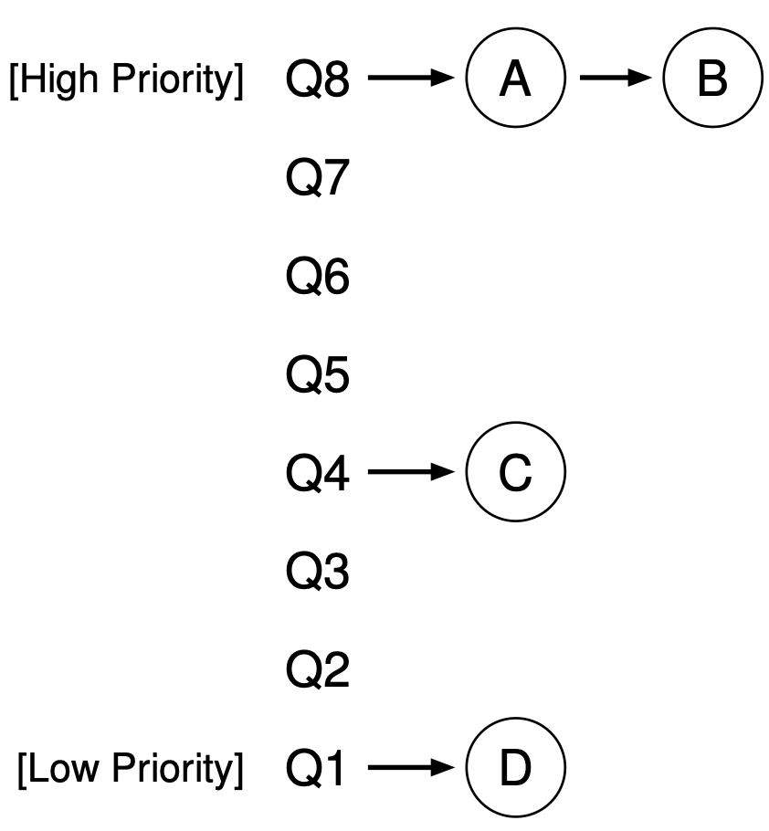
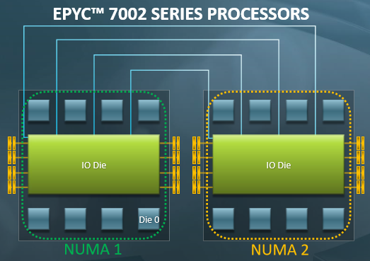

背景
“机制和策略分离”
- 机制：一个通用、可定制的抽象
- 策略：在机制上实现的具体
- 例子
- 分页和存储保护 (机制) v.s. 进程实现 (策略)
- 操作系统 API (机制) v.s. 应用程序 (策略)
中断和虚拟存储为我们提供了进程抽象 (机制)
- 操作系统的实现者在中断时获得了 “选择一个进程执行” 的权利
- 但那到底应该选哪个呢？(策略)
本次课内容与目标
理解常见的处理器的调度策略
- 轮转调度 (round-robin)
- 优先级/反馈调度
- 公平调度
了解调度是操作系统领域重要的、未解决的问题
- 为什么？
虚假的 (课本上的) 处理器调度
处理器调度
一组简单的假设
- 系统中有一个处理器 (1970s)
- 多个进程共享 CPU
- 包括系统调用 (进程的一部分代码在 syscall 中执行)
- 偶尔会等待 I/O 返回，不使用 CPU (通常时间较长)
- 处理器以固定的频率被中断
- 随时可能有新的进程被创建/旧的进程退出
中断机制
- 在中断/系统调用中可以切换到其他进程执行
让我们关注调度的策略
策略: Round-Robin
假设当前 $T_i$ 运行
- 中断后试图切换到下一个线程 $T_{(i+1)\,\textrm{mod}\,n}$
- 如果下一个线程正在等待 I/O 返回，继续尝试下一个
- 如果系统所有的线程都不需要 CPU，就调度 idle 进程执行
我们的 thread-os.c 实际上实现了 Round-Robin 的调度器
- 中断之间的进程执行称为 “时间片” (time-slicing)

策略：引入优先级

UNIX niceness
- -20 .. 19
- 越 nice，越被不 nice 的人抢占
- -20: 极坏; most favorable to the process
- 19: 极好; least favorable to the process
- 基于优先级的各种策略
- 有坏人，永远轮不到好人 (RTOS;
好人流下了悔恨的泪水) - nice 相差 10, CPU 获得相差 10 倍 (Linux)
- 有坏人，永远轮不到好人 (RTOS;
- 不妨试一试: nice/renice
taskset -c 0 nice -n 19 ./a.out &taskset -c 0 nice -n 9 ./a.out &
真实的处理器调度 (1)
策略：动态优先级 (MLFQ)
不会设置优先级？能不能让系统自动设定？
- 交互进程 (vi, vscode, ...), 大部分时候在等待
- 优先调度它们能提升用户体验，减少卡顿 (试想 Round-Robin)
- 计算进程 (gcc, ld, ...), 拼命使用 CPU

设置若干个 Round-Robin 队列
- 每个队列对应一个优先级
调度策略
- 优先调度高优先级队列
- 用完时间片 → 坏人，请你变得更好
- 让出 CPU I/O → 好人，可以变得更坏
- 很直观也很有趣，请阅读教科书
策略：Complete Fair Scheduling (CFS)
试图去模拟一个 “Ideal Multi-Tasking CPU”:
- “Ideal multi-tasking CPU” is a (non-existent :-)) CPU that has 100% physical power and which can run each task at precise equal speed, in parallel, each at . For example: if there are 2 tasks running, then it runs each at 50% physical power — i.e., actually in parallel.
“让系统里的所有进程尽可能公平地共享处理器”
- 为每个进程记录精确的运行时间
- 中断/异常发生后，切换到运行时间最少的进程执行
- 下次中断/异常后，当前进程的可能就不是最小的了
CFS: 实现优先级
让好人的时间变得快一些，坏人的时间变得慢一些……
- 不再是运行时间，而是 “vruntime” (virtual runtime)
- vrt[i] / vrt[j] 的增加比例 = wt[j] / wt[i]
const int sched_prio_to_weight[40] = {
/* -20 */ 88761, 71755, 56483, 46273, 36291,
/* -15 */ 29154, 23254, 18705, 14949, 11916,
/* -10 */ 9548, 7620, 6100, 4904, 3906,
/* -5 */ 3121, 2501, 1991, 1586, 1277,
/* 0 */ 1024, 820, 655, 526, 423,
/* 5 */ 335, 272, 215, 172, 137,
/* 10 */ 110, 87, 70, 56, 45,
/* 15 */ 36, 29, 23, 18, 15,
};
CFS 的复杂性 (1): 新进程/线程
子进程继承父进程的 vruntime
static void task_fork_fair(struct task_struct *p) {
struct sched_entity *se = &p->se, *curr;
...
rq_lock(rq, &rf);
update_rq_clock(rq);
cfs_rq = task_cfs_rq(current);
curr = cfs_rq->curr;
if (curr) {
update_curr(cfs_rq);
se->vruntime = curr->vruntime; // 继承父进程的 vruntime
}
place_entity(cfs_rq, se, 1);
...
CFS 的复杂性 (2): I/O
I/O (例如 1 分钟) 以后回来 vruntime 严重落后
- 为了赶上，CPU 会全部归它所有
Linux 的实现
- 被唤醒的进程获得 “最小” 的 vruntime (可以立即被执行)
if (renorm && curr)
se->vruntime += cfs_rq->min_vruntime;
CFS 的复杂性 (3): 整数溢出
vruntime 有优先级的 “倍数”
- 如果溢出了 64-bit 整数怎么办……？
a < b不再代表 “小于”！
假设：系统中最近、最远的时刻差不超过数轴的一半
- 我们可以比较它们的相对大小
bool less(u64 a, u64 b) {
return (i64)(a - b) < 0;
}
实现 CFS 的数据结构
用什么数据结构维护所有进程的 vruntime?
- 考虑：我们需要什么操作？
为每个进程维护映射 $t \mapsto vt(t)$
- 维护进程的 vruntime $vt(t) \leftarrow vt(t) + \Delta_t / w$
- 找到 $t$ 满足 $vt(t)$ 最小
- 进程创建/退出/睡眠/唤醒时插入/删除 $t$
道理是简单，这得多少代码啊……
真实的处理器调度 (2)
处理器调度：不仅是计算
线程不是 while (1) 的循环
- 还可能等待互斥锁/信号量/设备 (比一个时间片短很多)
在此情形下，会发生什么？
- round-robin?
- 考虑三个进程/线程: producer, consumer,
while (1) - Lab 2 会遇到这个问题
- 主要是因为没有精确的时间统计
- 考虑三个进程/线程: producer, consumer,
- CFS?
- (似乎没问题？) 线程有精确的 accounting 信息
优先级反转 (Priority Inversion)
void bad_guy() { // 高优先级
mutex_lock(&lk);
...
mutex_unlock(&lk);
}
void nice_guy() { // 中优先级
while (1) ;
}
void very_nice_guy() { // 最低优先级
mutex_lock(&lk);
...
mutex_unlock(&lk);
}
very nice guy 在持有锁的时候让出了处理器……
- bad guy 顺便也无法运行了 (nice guy 抢在了它前面 👎)
The First Bug on Mars
Sojourner “探路者” (PathFinder), 1997 年 7 月 4 日着陆火星，但着陆几天后，出现系统重启和数据丢失
- Lander: IBM RISC 6000 Single Chip (Rad6000 SC) 20 MIPS CPU, 128 MiB RAM, 6 MiB EEPROM
- 操作系统: VxWorks “实时” 任务操作系统
- ASI/MET task: 大气成分监测 (低优先级)
bc_disttask: 分发任务 (中优先级)bc_schedtask: 总线调度 (高优先级)
- 操作系统: VxWorks “实时” 任务操作系统
- Rover: 0.1 MIPS Intel 80C85 CPU, 512K RAM, 176K Flash SSD
The First Bug on Mars (cont'd)

- (低优先级)
select -> pipeIoctl -> selNodeAdd -> mutex_lock - (高优先级)
pipeWrite -> mutex_lock
解决优先级反转问题
Linux: CFS 凑合用吧；实时系统：火星车在 CPU Reset 啊喂？？
- 优先级继承 (Priority Inheritance)/优先级提升 (Priority Ceiling)
- 持有 mutex 的线程/进程会继承 block 在该 mutex 上的最高优先级
- 不总是能 work (例如条件变量唤醒)
- 在系统中动态维护资源依赖关系
- 优先级继承是它的特例
- 似乎更困难了……
- 避免高/低优先级的任务争抢资源
- 对潜在的优先级反转进行预警 (lockdep)
- TX-based: 冲突的 TX 发生时，总是低优先级的 abort
真实的处理器调度 (3)
多处理器调度
还没完：我们的 CPU 里有多个共享内存的处理器啊！
- 不能简单地每个处理器上执行 CFS
- 出现 “一人出力，他人围观”
- 也不能简单地一个 CFS 维护队列
- 在处理器之间迁移会导致 L1 cache/TLB 全都白给
- 迁移？可能过一会儿还得移回来
- 不迁移？造成处理器的浪费
- 在处理器之间迁移会导致 L1 cache/TLB 全都白给
多处理器调度：被低估的复杂性
“And you have to realize that there are not very many things that have aged as well as the scheduler. Which is just another proof that scheduling is easy.” ——Linus Torvalds, 2001
Linus 以为调度是个挺简单的问题？
- As a central part of resource management, the OS thread scheduler must maintain the following, simple, invariant: make sure that ready threads are scheduled on available cores... this invariant is often broken in Linux. Cores may stay idle for seconds while ready threads are waiting in runqueues.
- J. Lozi, et al. The Linux scheduler: A decade of wasted cores. In Proc. of EuroSys, 2016. (狂黑 Linus 😂)
实际情况 (1): 多用户、多任务
还是组里服务器的例子……
- 马上要到 paper deadline 了，A 和 B 要在服务器上跑实验
- A 要跑一个任务，因为要调用一个库，只能单线程跑
- B 跑并行的任务，创建 1000 个线程跑
- CFS 会发生什么？
- 提示: CFS 公平地在线程之间共享 CPU
更糟糕的是，优先级解决不了这个问题……
- B 不能随便提高自己进程的优先级
- “An unprivileged user can only increase the nice value and such changes are irreversible...”
Linux Control Groups (cgroups)
man 7 cgroups
- 没有 cgroups 就没有 Docker
- 也就没有 Online Judge
- (在课程最后专题讲解时会涉及)
- man 7 namespaces

实际情况 (2): Big.LITTLE/能耗

Snapdragon 888
- 1X Prime Cortex-X1 (2.84GHz)
- 3X Performance Cortex-A78 (2.4GHz)
- 4X Efficiency Cortex-A55 (1.8GHz)
处理器的计算能力不同
- 均分 workloads 会让小核上的任务饥饿
- Linux Kernel EAS (Energy Aware Scheduler)
实际情况 (2): Big.LITTLE/能耗 (cont'd)
移动平台的考虑 (能耗 vs. 速度 vs. 吞吐量)
- 频率越低，IPC (Instruction per Cycle) 和能效都更好

实际情况 (3): Non-Uniform Memory Access
线程看起来在 “共享内存”
- 但共享内存却是 memory hierarchy 造就的假象

producer/consumer 位于同一个/不同 module 性能差距可能很大
实际情况 (4): CPU Hot-plug
😂😂😂 我讲不下去了
- 实在是太复杂了
- 我不是代码的维护者，并不清楚这些细节
- 把上面都加起来
- 这得考虑多少情况，写多少代码……
- 把上面都加起来
复杂的系统无人可以掌控
- J. Bouron, et al. The battle of the schedulers: FreeBSD ULE vs. Linux CFS. In Proc. of USENIX ATC, 2018.
操作系统中的调度问题
数据中心的处理器调度

互联网企业如何为数十亿用户提供低延迟高质量的服务？
高优先级的任务 (搜索、购物车、……) → 质量必须得到保证
- Amazon: 100ms 延迟 = 少卖 1% 的货物
- 想想淘宝/京东/拼多多...的 1% 是多么天大的数额……
低优先级的任务 (小广告投放、索引、转码、……) → 尽可能把服务器填满
- 估计 Google 有 2.5 million 台服务器 (2016)
- 提高 1% 的利用率都节约巨大的机器/能量
数据中心的处理器调度 (cont'd)
如何把任务分配到 1,000,000 台机器上？
- 容器集群 (Kubernetes, Docker Swarm, ...)
- 依然热门的操作系统研究领域
- (延伸阅读)
如何在一台机器上保证高优先级任务执行的效率？
- cgroup + 优先级？
- 并行的任务可能会占用 I/O, pollute cache/buffer, ...
- 就算有绝对高的优先级
- 在混合部署的时候延迟依然会增长
- (依然是 open problem)
- 并行的任务可能会占用 I/O, pollute cache/buffer, ...
甚至……有些基本假设都是不成立的
例子: more CPU time, more progress
- 我们课堂上的例子就可以 challenge 这一点
- sum-atomic.c 创建 4 个
do_sum执行
$ time taskset -c 0 ./sum-atomic.out
sum = 40000000
(0.168s)
$ time taskset -c 0,1 ./sum-atomic.out
sum = 40000000
(0.587s)
分配了 1/2 的处理器资源，反而加速了 3.5 倍
- 系统里进程的行为和交互是非常复杂的……; NUMA 里尤其重要
- (依然是 open problem)
异构计算系统
完成 “同一件事” 的部件可能不止一个

- CPU, GPU, NPU, DSP, DSM/RDMA/远程执行
- M. S. Gordon. COMET: Code offload by migrating execution transparently. In Proc. of OSDI, 2012.
所有复杂系统的调度都是拙劣的 Workaround
调度是复杂、有着深远考虑的困难问题
- 学校预算 10,000,000 经费，如何合理分配？
- 发改委下拨 1000,000,000,000 经费，如何合理分配？
巨大的设计空间
- 建模 (理解 workload; 过去发生了什么)
- profiling 和 trace; PMU
- 预测 (试图预知未来可能发生什么)
- CPU 里非常常见的技术: branch prediction/BTB; prefetching; speculative/run-ahead execution; ...
- 决策 (应该如何调整系统行为)
- 我们开始有 FPGA/硬件加速器 (NPU, TPU, ...) 和基于 AI 的资源调度
总结
总结
本次课内容与目标
- 理解常见的处理器的调度策略
- 了解调度是操作系统领域重要的、未解决的问题
Takeaway messages
- 机制和策略分离
- “做系统” 的矛盾
- 必须把问题简单化，才能做 “第一个” 东西出来
- 但随着需求的增长，复杂系统会失控